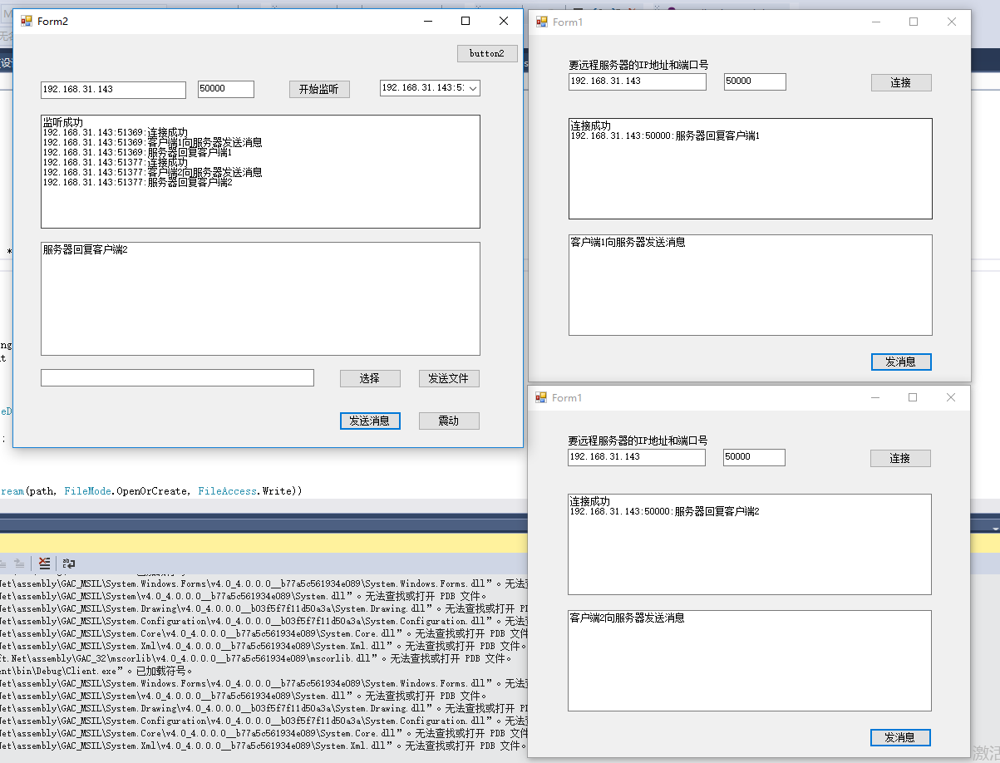

服务器代码：
using System;
using System.Collections.Generic;
using System.ComponentModel;
using System.Data;
using System.Drawing;
using System.IO;
using System.Linq;
using System.Net;
using System.Net.Sockets;
using System.Text;
using System.Threading;
using System.Threading.Tasks;
using System.Windows.Forms;
namespace Missuin
{
public partial class Form2 : Form
{
public Form2()
{
InitializeComponent();
}
private void button1_Click(object sender, EventArgs e)
{
//当点击开始监听的时候 在服务器端创建一个负责监IP地址和端口号的Socket
Socket socket = new Socket(AddressFamily.InterNetwork, SocketType.Stream, ProtocolType.IP);
IPAddress ip = IPAddress.Any;//IPAddress.Parse(txtServer.Text);
//创建端口号对象
IPEndPoint point = new IPEndPoint(ip, Convert.ToInt32(txtPort.Text));
//监听
socket.Bind(point);
ShowMsg("监听成功");
socket.Listen(10);
Thread th = new Thread(Listen);
th.IsBackground = true;
th.Start(socket);
}
Socket socketSend;
/// <summary>
/// 被线程所执行的函数，只能传object参数
/// </summary>
/// <param name="o"></param>
void Listen(Object o)
{
Socket socketWatch = o as Socket;
//等待客户端连接 并创建一个负责通信的Sokcet
while (true)
{
//负责根客户通信的Socket
socketSend = socketWatch.Accept();
dictSocket.Add(socketSend.RemoteEndPoint.ToString(), socketSend);
cbuUsers.Items.Add(socketSend.RemoteEndPoint.ToString());
ShowMsg(socketSend.RemoteEndPoint.ToString() + ":" + "连接成功");
////客户端连接成功后，服务器应该接受客户端发来的消息
//byte[] buffer = new byte[1024 * 1024 * 2];
////实际接受到的有效字节数
//int r = socketSend.Receive(buffer);
//string str = Encoding.UTF8.GetString(buffer, 0, r);
//Console.WriteLine(socketSend.RemoteEndPoint+":"+str);
Thread th = new Thread(Recive);
th.IsBackground = true;
th.Start(socketSend);
}
}
Dictionary<String, Socket> dictSocket = new Dictionary<string, Socket>();
/// <summary>
/// 服务器端不修改的接收客户发来的消息
/// </summary>
/// <param name="o"></param>
void Recive(object o)
{
Socket socketSend = o as Socket;
while (true)
{
try
{
//客户端连接成功后，服务器应该接受客户端发来的消息
byte[] buffer = new byte[1024 * 1024 * 2];
//实际接受到的有效字节数
int r = socketSend.Receive(buffer);
if (r == 0)
break;
string str = Encoding.UTF8.GetString(buffer, 0, r);
ShowMsg(socketSend.RemoteEndPoint + ":" + str);
}
catch (Exception ex)
{
Console.WriteLine(ex.Message);
}
}
}
void ShowMsg(string msg)
{
txtLog.AppendText(msg + "\r\n");
}
private void Form2_Load(object sender, EventArgs e)
{
Control.CheckForIllegalCrossThreadCalls = false;
}
/// <summary>
/// 服务器给客户端发消息
/// </summary>
/// <param name="sender"></param>
/// <param name="e"></param>
private void button5_Click(object sender, EventArgs e)
{
byte[] msgs = Encoding.UTF8.GetBytes(this.txtmsg.Text);
List<byte> list = new List<byte>();
list.Add(0);
list.AddRange(msgs);
byte[] newmsgs = list.ToArray();
//获得用户在下拉框中选中的IP地址
string ip = cbuUsers.SelectedItem.ToString();
Socket sendSocket = dictSocket[ip];
sendSocket.Send(newmsgs);
ShowMsg(sendSocket.RemoteEndPoint + ":" + this.txtmsg.Text);
}
/// <summary>
/// 选择要发送的文件
/// </summary>
/// <param name="sender"></param>
/// <param name="e"></param>
private void btnSelect_Click(object sender, EventArgs e)
{
OpenFileDialog of = new OpenFileDialog();
of.InitialDirectory = @"C:\users";
of.Title = "请选择要发送的文件";
of.Filter = "所有文件|*.*";
of.ShowDialog();
txtPath.Text = of.FileName;
}
private void btnFileSend_Click(object sender, EventArgs e)
{
string path = this.txtPath.Text.ToString();
using(FileStream fs = new FileStream(path, FileMode.Open, FileAccess.Read))
{
byte[] buffer = new byte[1024 * 1024 * 5];
List<byte> list = new List<byte>();
list.Add(1);
list.AddRange(list);
byte[] newBytes = list.ToArray();
Socket socket = dictSocket[cbuUsers.SelectedItem.ToString()];
socket.Send(newBytes);
}
}
private void button3_Click(object sender, EventArgs e)
{
byte[] buffer = new byte[1];
buffer[0] = 2;
Socket socket = dictSocket[cbuUsers.SelectedItem.ToString()];
socket.Send(buffer);
}
}
}
客户端代码
using System;
using System.Collections.Generic;
using System.ComponentModel;
using System.Data;
using System.Drawing;
using System.IO;
using System.Linq;
using System.Net;
using System.Net.Sockets;
using System.Text;
using System.Threading;
using System.Threading.Tasks;
using System.Windows.Forms;
namespace Client
{
public partial class Form1 : Form
{
public Form1()
{
InitializeComponent();
}
//创建负责通信的Socket
Socket socketSend;
private void button1_Click(object sender, EventArgs e)
{
try
{
socketSend = new Socket(AddressFamily.InterNetwork, SocketType.Stream, ProtocolType.Tcp);
IPAddress ip = IPAddress.Parse(textBox1.Text);
IPEndPoint point = new IPEndPoint(ip, Convert.ToInt32(textBox2.Text));
socketSend.Connect(point);
showMsg("连接成功");
//开启一个新线程不停的接收服务器发来的消息
Thread th = new Thread(recive);
th.IsBackground = true;
th.Start();
}
catch(Exception ex)
{
}
}
/// <summary>
/// 不停的接收服务器发来的消息
/// </summary>
void recive()
{
while (true)
{
byte[] buffer = new byte[1024 * 1024 * 2];
int r = socketSend.Receive(buffer);
if (r == 0)
break;
//发来的是文字
if (buffer[0] == 0)
{
string s = Encoding.UTF8.GetString(buffer,1,r-1);
showMsg(socketSend.RemoteEndPoint + ":" + s);
}
else if (buffer[0] == 1)
{
SaveFileDialog sfd = new SaveFileDialog();
sfd.InitialDirectory = @"C:\";
sfd.Title = "请选择要保存的文件";
sfd.Filter = "所有文件|*.*";
sfd.ShowDialog(this);
string path = sfd.FileName;
using(FileStream sf = new FileStream(path, FileMode.OpenOrCreate, FileAccess.Write))
{
sf.Write(buffer, 1, r - 1);
}
MessageBox.Show("保存成功");
}
else if (buffer[0] == 2)
{
for (int i=0;i<10;i++){
this.Location = new Point(200, 200);
this.Location = new Point(210, 210);
}
}
}
}
private void showMsg(string msg)
{
this.txtLog.AppendText(msg + "\r\n");
}
private void button2_Click(object sender, EventArgs e)
{
byte[] msgs = System.Text.Encoding.UTF8.GetBytes(txtmsg.Text);
socketSend.Send(msgs);
}
private void Form1_Load(object sender, EventArgs e)
{
Control.CheckForIllegalCrossThreadCalls = false;
}
}
}